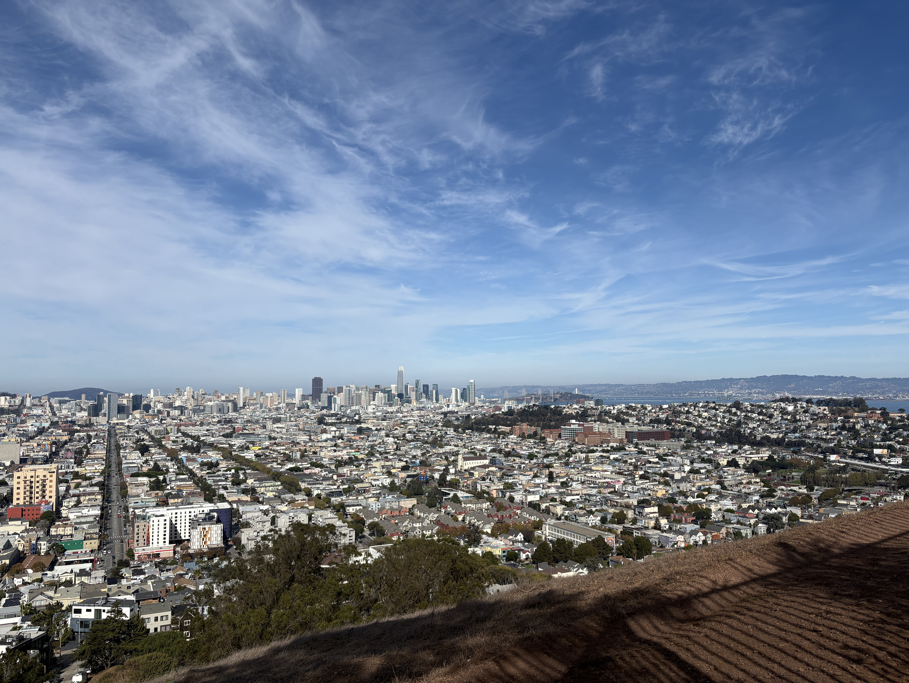
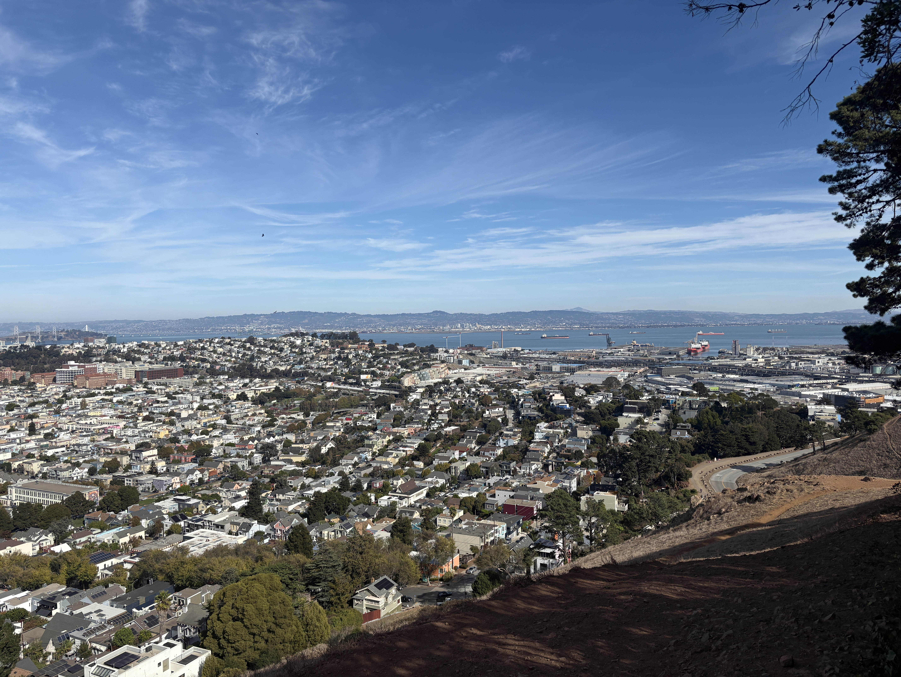

Project 4 · Part A
Overview
TODO: One-paragraph summary of Part A: shoot photos, recover homographies, warp, and blend into a mosaic.
TODO: Explain the setup in main.py: images loaded with cv2.imread from ../data (path built from __file__), then downscaled with cv2.resize(..., fx=0.25, fy=0.25). Note the original resolution (5712 × 4284) and why I downscaled.
TODO: Mention that OpenCV loads images in BGR order (and convert to RGB before displaying/saving for the web).
Part A.1
For this project, I took multiple images of San Francisco skyline to build the image stitching based on. I kept in mind to stay in the same position and take photos as close together in time as possible so panorama stitching looks convincing in the result. Also, I kept in mind to overlap images, so I have information I can use to glue images together. Also, to test out the effect of zooming in the image stitching, I took images at different focal lengths.
TODO: Describe how the photos were taken (same center of projection, rotate camera only, lots of overlap, fixed exposure/focus).
TODO: Describe where/what each image set is.


Part A.2
TODO: Explain the homography $p' = Hp$: a $3 \times 3$ matrix with 8 degrees of freedom (bottom-right fixed to 1), so at least 4 correspondences are needed.
TODO: Walk through computeH(image1_pts, image_pts): each correspondence $(x, y) \to (u, v)$ adds two rows to $A$:
$$\begin{bmatrix} -x & -y & -1 & 0 & 0 & 0 & ux & uy & u \\ 0 & 0 & 0 & -x & -y & -1 & vx & vy & v \end{bmatrix} h = 0$$
TODO: Explain solving $Ah = 0$ with SVD: take the last row of $V^T$ (smallest singular value), divide by its last entry, reshape to $3 \times 3$. Mention this is least squares when using more than 4 points.
TODO: Explain how correspondences were chosen (currently placeholder points in main.py; replace with real clicked points and describe the tool used).
TODO: Explain translate_homography(H, tx, ty): left-multiplying by a translation matrix to shift the warped result into the visible canvas.
TODO: Show the recovered $H$ matrix values.
images/a2_points.jpg).Part A.3
TODO: Explain inverse warping: for every output pixel, apply $H^{-1}$ to find where it comes from in the source image (avoids holes that forward warping leaves).
TODO: Explain the vectorized implementation: build all pixel coordinates with np.meshgrid, stack into a $3 \times N$ homogeneous array, one matrix multiply, divide by the third coordinate, mask out-of-bounds pixels.
TODO: warpImageNearestNeighbor: round to the nearest source pixel.
TODO: warpImageBilinear: weight the 4 neighboring pixels by $(1-dx)(1-dy)$, $dx(1-dy)$, $(1-dx)dy$, $dx\,dy$.
TODO: Compare nearest neighbor vs. bilinear (quality: jaggies vs. smoothness; speed). Include a zoomed-in crop.
TODO: Note on speed: the first per-pixel Python loop took minutes on full-res images; vectorizing made it seconds.
TODO: Explain output canvas size (currently same as input, so parts get cropped; describe how the bounding box is computed if I fix this).
TODO: Rectify at least two images (e.g., a rectangular object photographed at an angle) by mapping its corners to a square/rectangle. Show before and after.
images/a3_nn_vs_bil.jpg).images/a3_rectified.jpg).Part A.4
TODO: Explain the mosaic pipeline: warp image2 into image1's frame, place both on a shared canvas.
TODO: Explain the blending. Current main.py uses cv2.pyrDown on both images and then np.maximum. Describe the final approach (e.g., Laplacian pyramid blending with a mask, or alpha feathering) and why plain overwrite / max leaves visible seams.
TODO: Describe the "upscale" step (still empty in main.py).
TODO: Show 3 mosaics, each with source images and the result.
TODO: Discuss failure cases (ghosting from moving objects, exposure differences, parallax).
images/a4_mosaic1.jpg).images/a4_mosaic2.jpg).images/a4_mosaic3.jpg).Part A.5
TODO: Describe what I implemented for Bells & Whistles (extra for CS180, mandatory for CS280A), with results.
Reflection
TODO: The most important/coolest thing I learned from Part A.